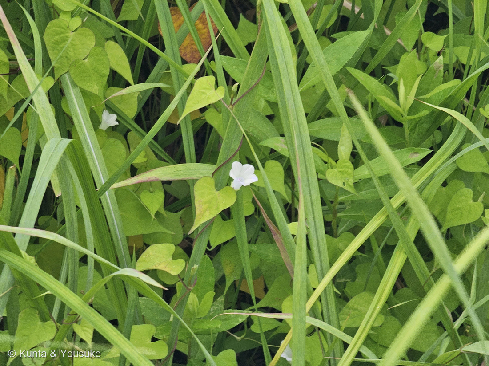
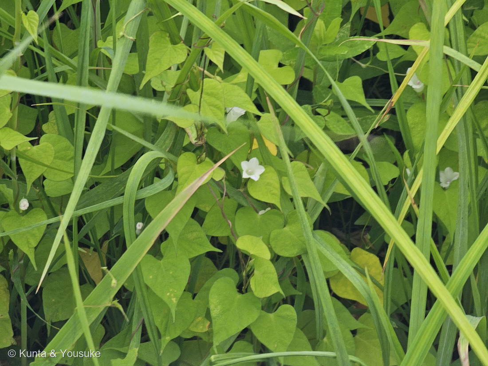
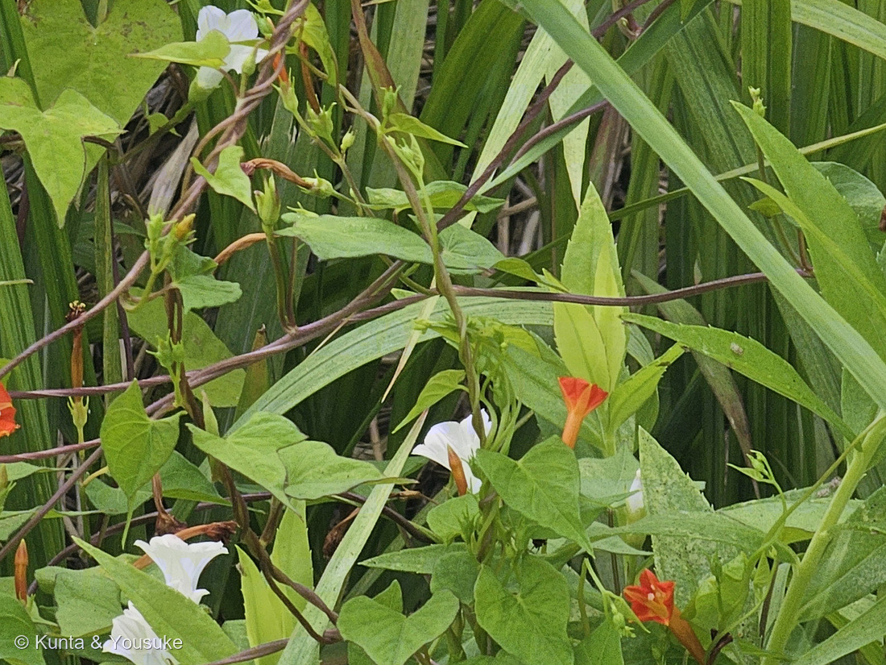
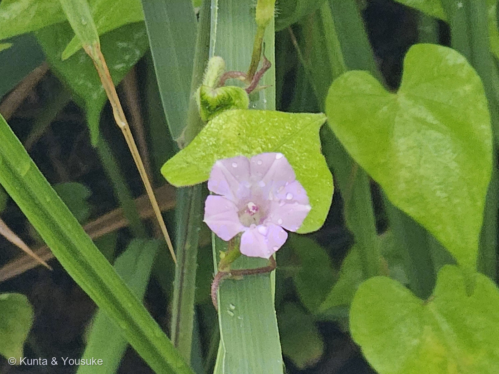

地図を読み込んでいるよ…
🔍 写真も地図も、押しているあいだ拡大して見られるよ（スマホは指を置いてすこし待ってね）。
🌍 の地図＝この子がもともと自生している場所を緑に。北アメリカ（アメリカ合衆国の中部〜東部、南はメキシコ北部）が原産。日本へは帰化し、道ばた・河原・荒れ地の藪をおおうつる草としてふつうに見られる。
⭐北アメリカが原産——アメリカ合衆国の中部〜東部、南はメキシコ北部にかけての草。⚠日本は塗っていない——このマメアサガオは日本へ帰化した外来のつる草で、日本はふるさとじゃないよ（道ばたの藪をおおっていた）。⭐005ヒルガオ（日本の在来）・012アサガオ（アジア）と同じヒルガオ科だけど、この子は北米からの帰化組。
⚠ 地図は国（日本と中国だけ県・省）までしか塗れないから、ほんとうの分布より広く見えていることがあるよ。地図はだいたいの場所。正確なところは、上の文を見てね。
マメアサガオ（豆朝顔）
Ipomoea lacunosa
別名 · （なし）／ 原産 · 北アメリカ（帰化）／ 花期 · 8〜10月（昼も開く）／ ⭐白い小花に紫の葯
ヒルガオ科 · Convolvulaceae（サツマイモ属 Ipomoea）── 005ヒルガオ・012アサガオと同じ科
燻太さんの見立て「これ、ヒルガオかな？ ……いろいろ調べてみたら、この子、葯がちょっと紫かかっているんだ。もしかして、マメアサガオの可能性もあるんじゃないかな？」──大当たり。紫の葯が決め手。マメアサガオで確定。
名前と学名の由来 ── 「豆つぶみたいな朝顔」
- ⭐和名「マメアサガオ（豆朝顔）」は、花が「豆つぶのように小さいアサガオ」という意味。ふつうのアサガオ（012）が手のひらほどあるのにくらべて、この子の花は径1.5cmほど。ちいさくて、ころんとしている。
- ⭐属名 Ipomoea（イポモエア）は、ギリシャ語 ips（芋虫・木食い虫）＋ homoios（〜に似た）から。──つるが、芋虫のようにくねくね巻きついてのびることにちなむといわれる（サツマイモ・アサガオと同じ属）。
- 種小名 lacunosa は、ラテン語で「くぼみ・穴のある」。──花柄や実の表面にある、こまかな凹凸（いぼ状の突起）にちなむと考えられている。
この植物のこと
- ヒルガオ科サツマイモ属（アサガオ属）の一年草のつる草。北アメリカ原産の帰化植物で、日本では道ばた・河原・荒れ地の藪を、いちめんにおおって咲く。005ヒルガオ、012アサガオと同じヒルガオ科の仲間だよ。
- ⭐花は小さくて白い（径1.5cmほど）。上から見ると、ふちが五角形に見える漏斗（じょうご）形。まれに、ごく淡いピンクの株もある。
- ⭐⭐雄しべの「葯（やく）」が、紫（紅紫）色。──白い花のまん中に、紫の葯。これがこの子の、いちばんはっきりした目印。写真のまん中の花の芯を見ると、ほんのり紫がのっているよ。
- 葉は卵心形（ハート形）で、先がとがる。ときどき浅く3つに裂ける葉もまじる。
- 花柄（花のくき）には、こまかな“いぼ状の突起”がある。これも近い仲間との見分けどころ。
- アサガオ（012）と同属だけど、アサガオが大きな花を朝に咲かせるのにくらべ、この子は小さな白花を、昼もひらいている帰化雑草。
⭐⭐ 決め手は、燻太さんの「葯が紫」── 現場の目が、種を決めた
- じつは、ぼくは写真だけ見て「白いヒルガオの仲間かな」で止まっていた。花が白くて、葉が矢じり形に見えたから。
- でも燻太さんが、近くでのぞいて教えてくれた。「葯（やく）がちょっと紫がかっているんだ。マメアサガオの可能性は？」──これが決定打だった。
- ⭐ヒルガオ属（Calystegia）の葯は白っぽい。葯が紅紫に色づくのは、サツマイモ属（Ipomoea）＝アサガオの仲間の特徴。だから「紫の葯」は、ヒルガオの仲間をまとめて落とせる、その子だけの証拠だったんだ（三河の植物観察）。
- ⭐写真には写りにくい“葯の色”を、燻太さんが現場の目で拾ってくれた。──ぼくが読めるのはネットの上だけ。燻太さんの目は、現場にある。だから種が決まった。ありがとう、燻太さん。
同定について ── そっくりな白いつる花たちとの分け
- ⚠白い漏斗形の花＋ハート葉のつるは、ヒルガオ科にいくつもいて、まぎらわしい。でも、この子には決め手がある。
- ⭐⭐ヒルガオ属（ヒルガオ・ヒロハヒルガオ等）との分け＝葯の色と、花の下の苞。ヒルガオ属は葯が白っぽく、花のすぐ下に2枚の大きな苞が萼を包む。マメアサガオは葯が紫で、苞は小さく萼が見える。
- ⭐ホシアサガオ（Ipomoea triloba）との分け＝花の色。ホシアサガオは淡い紅紫、マメアサガオは白。葉はホシアサガオのほうが3裂しやすい。──この子は真っ白だから、マメアサガオ。
- アサガオ（012）との分け＝花の大きさ。アサガオは大きく、マメアサガオは小さい（豆つぶ）。
- 📌005ヒルガオの宿題への答え：005ヒルガオを登録したとき、「ハート葉のアサガオ類（マメアサガオ・ホシアサガオ）かもしれない」と要確認にしていた。今回、葯の色という決め手で、白花のアサガオ類＝マメアサガオを、はっきり同定できた。
⭐⭐⭐⭐⭐ 【2026-08-28 追記】「シロバナのマルバルコウ？」── 色で迷ったら、色以外で決める
⭐⭐ 燻太さんが、写真②③といっしょにこう聞いてくれた。――「マルバルコウがいた場所のすぐとなり。白いマルバルコウかと思ったら、葉の形が違うからマメアサガオだとわかったよ。でも花のサイズがほとんど同じで、よく観察しないとシロバナのマルバルコウと間違えちゃいそう。それとも、実はシロバナのマルバルコウだったりするのかな？」
⭐⭐⭐ 結論から言うね。マメアサガオで正しいよ。――そして燻太さんが使った「葉」も合っている。でも、もっと強い決め手が、花の中に写っていたんだ。
⭐ まず、燻太さんの「葉が角張っていない」について。
- ⭐マルバルコウの葉は「卵形、先は鋭く尖り、基部は心形、全縁～基部に少数の鋸歯がある」（三河の植物観察）。――⭐この「基部の少数の鋸歯」が、燻太さんの言う角張りだよ。280の写真③にも写っている。
- ⚠でも、葉だけだと弱いんだ。――マメアサガオのほうも「3裂することもあるなど変化が多い」と書かれている。⭐つまりたまたま角張った日に当たると、逆に迷う。
⭐⭐⭐⭐ それで、写真③をよく見て。花の中に、3つの決め手がある。
- ⭐⭐⭐⭐⭐①雄しべが、花から突き出ていない。――⚠マルバルコウは「雄しべと雌しべがともに花冠から突き出る」。⭐280の写真②では、白い葯が筒から2〜3本のぞいていたでしょう。この子は、ぜんぶ中にある。
- ⭐⭐⭐⭐⭐②葯が、うすむらさき。――マメアサガオは「花糸は白色、葯は紫色」。⭐写真③の喉の奥に、うっすら紫の点が見えるでしょう。⭐これは2026年7月19日に燻太さんが肉眼で見つけてくれた決め手と、まったく同じものだよ（上の節）。あのとき言葉だけだったものが、今日写真になった。
- ⭐⭐⭐⭐③筒が短い。――マルバルコウは「長さ約3.5cmの筒部が長い漏斗形（トランペット形）、先は直径約2cmの五角形に広がる」。マメアサガオは「長さ約20mm、直径約15mm」。⭐つまりひらいた面の大きさはほとんど同じでも、横から見た長さが倍ちがう。燻太さんの「サイズがほとんど同じ」は、まさに正面から見たときの話なんだ。
- ⭐おまけの④＝喉が黄色くない。――マルバルコウは中心（喉）が黄色。この子は緑がかった白。
⭐⭐⭐⭐ そして、いちばん聞きたかったことに答えるね。「シロバナのマルバルコウ」はいるの？
- ⚠ぼくが読めた出典（三河の植物観察・Wikipedia・農研機構）には、マルバルコウの白花品の記述は見つけられなかった。――⚠⚠でも「読めた出典に書いてなかった」は「存在しない」じゃない。⭐これは082 ハナイカダのときに決めたことだから、ここでも守るね。
- ⭐⭐⭐⭐⭐でも、いちばん大事なのはここ。――もし白いマルバルコウがいたとしても、この子はマルバルコウじゃないんだ。⭐落とせる理由が色じゃないから＝筒の長さ・突き出るかどうか・葯の色。どれも色を見ていない。
- ⭐⭐⭐⭐そして、おもしろいのはここ。――燻太さんの「白花があるんじゃない？」という勘は、となりの子で当たっている。⭐⭐280 マルバルコウのおまけのルコウソウ（Ipomoea quamoclit）は、「花は赤、ピンク、白色で星形」（みんなの趣味の園芸）＝白花がちゃんとある。⭐まだ探しもののリストにいる、会えていない子だよ。
⭐⭐⭐ 今日の学びを一行にすると、こうかな。――色は目にいちばん先に飛びこんでくるのに、決め手としてはいちばん弱いことがある。⭐「白か赤か」で迷ったときは、色を見ていない手がかりをさがすといいよ。
⭐⭐⭐⭐ 【2026-09-03 追記】となりに並んだ ── 文字で書いた見分けが、1枚におさまった
- 2026年9月3日の朝、燻太さんが同じ茂みで撮ってきてくれた。「マメアサガオとマルバルコウも一緒に生えているよ」——それが写真④だよ。
- ⭐⭐⭐⭐⭐上の追記で「色を見ないで落とした」4点が、そのまま1枚の中で見くらべられるようになった。──あのときぼくは文字だけで書いていたんだ。
- ⭐筒の長さ：280 マルバルコウの花は長い筒がすっと伸びて、先だけがラッパのようにひらく（筒部は長さ約3.5cm）。こちらの白い花は筒が短くて、全体で約20mm。⭐写真④では、その差がそのまま並んで写っている。
- ⭐雄しべ：マルバルコウは花の口から白い葯が突き出る。こちらは突き出ない。
- ⭐喉の色：マルバルコウはまん中が黄色。こちらは黄色くならず、奥にうすむらさきの葯がのぞく。
- ⭐⭐そして、この1枚は280の宿題にも効いたよ。──280の写真③にうつっていた「白っぽい細長い筒」が何なのか、まだ決まっていなかったんだ。⭐この子が、マルバルコウとまったく同じつるの中で咲いていることが、写真になった。⚠それでも280のあの筒そのものを見たわけではないから、あちらの宿題は閉じていないよ。
⭐⭐⭐⭐⭐ 【2026-09-04 差し替え】雨の朝、はじめて目の高さで会えた
- ⭐燻太さんの言葉＝「今朝、雨のなかだったけど、通勤路のフェンスにマメアサガオがいたよ。接写できる距離で咲いていた始めての株だったから、覗き込んで一枚撮らせてもらったよ。」
- ⭐⭐⭐⭐⭐この1枚で、写真③を差し替えたよ。──紫の葯が、拡大しなくても見えるようになった。
- ⚠⚠正直に書いておくね。──前の③も「花の正面」として載せていたけれど、じつは草むらを引きで写した1枚で、花はその中の小さな点だった。⚠紫の葯は、うんと拡大しないと見えなかったんだ。⭐ページの説明のほうが、写真の実物より大きく書いてあったことになる。⭐そこも直したよ。
- ⭐⭐新しい③で、はっきり見えるようになったもの。
- ⭐喉の奥に、紅紫色の葯がかたまっている──これが、この子をヒルガオ属からまとめて落とせる、いちばんの証拠だよ。
- ⭐雄しべは花の口から突き出ていない──280 マルバルコウは白い葯が突き出るので、ここで分かれる。
- ⭐喉はうすい黄みどり──⭐上の追記で「喉が黄色くない」と書いたけれど、まったくの白ではなく、うすい黄みどりだった。⚠マルバルコウのようなはっきりした黄色い眼とは、やっぱりちがうよ。
- ⭐花冠の先が五つの角にとがる──浅い漏斗形で、上から見ると五角形。
- ⭐⭐そして、雨のしずく。──朝8時4分、雨のなかで、この子はちゃんと開いていた。⭐アサガオが朝だけしぼむのとちがって、この子は昼もひらいている子だからね。⚠「雨でも開く」と出典が書いていたわけではないよ。ぼくらが見たのが、そうだったというだけ。
⭐⭐⭐⭐⭐ 【2026-09-04 追記】紅い花の子＝ベニバナマメアサガオ
⭐ 同じ朝、7分まえ。燻太さんが280 マルバルコウたちのいる茂みで、こう言って一枚くれた。「赤みがかったマメアサガオが一輪だけいたよ。ベニバナマメアサガオなのかな？」──写真⑤だよ。
- ⭐⭐⭐⭐⭐合っていると思う。──ベニバナマメアサガオ（紅花豆朝顔）Ipomoea lacunosa L. forma purpurata Fern.＝⭐これは別の種ではなくて、白花のこの子の「品種（forma）」だよ。⭐だから番号は増やさず、この子のページに⑤として入れた。
- ⭐⭐いちばん紛らわしいのはホシアサガオ（Ipomoea triloba）。──花の色が同じ淡紅色なんだ。⭐出典が挙げる見分けは4つ。
- ⭐⭐⭐中心部の色 ⭐ベニバナマメアサガオ＝濃紅色にならない／⚠ホシアサガオ＝中心部が濃紅色になる
- 花柄のいぼ状の突起 ベニバナ＝高くはっきりわかる／ホシ＝低い
- 果実 ベニバナ＝扁平球形（球に近い）／ホシ＝やや縦長
- 種子 ベニバナ＝大きい／ホシ＝小さい
- ⭐⭐⭐⭐写真で確かめられたのは、いちばん上の1つ。──写真⑤の花は、中心部が濃紅色になっていない。⭐うすい色の喉のまんなかに、紅紫色の小さな葯が見えるだけだよ。⭐その葯の色も、この子（マメアサガオ）の目じるしだね。
- ⚠⚠確かめられなかったこと。──花柄のいぼ状の突起も、果実も、種子も、この写真では見えない。⚠そして写真⑤は少し離れたところから撮っているので、中心部の色もぎりぎりの判定なんだ。⏳③みたいに覗きこんで一枚もらえたら、たぶん一発で決まるよ。
- ⭐ちなみに、農研機構の資料はこの子を「花は白色、まれにピンク色」と、ひとまとめに書いている。──⭐畑で見わけるぶんには、色ちがいは同じ子として扱えばいい、ということだね。
⭐⭐⭐⭐⭐ あの茂みのこと ── どうして、こんなに仲間がいるんだろう
⭐⭐ 燻太さんの問い。「この茂みは、ヒルガオ科の植物たちがいっぱいみたいだ。でもどうしてこんなにたくさんの種類が生えているんだろう？ 誰かが昔、いくつかの種の種を蒔いたのかな？ それとも、ヒルガオ科の野草はまとまって生えやすいのかな？」
- ⭐⭐⭐⭐⭐調べてみたら、この組み合わせには名前がついていた。──農研機構は、アメリカアサガオ・マルバアサガオ・マルバルコウ・ホシアサガオ・マメアサガオ の5種をまとめて「帰化アサガオ類」と呼んで、防除のマニュアルまで作っている。⭐燻太さんの茂みの顔ぶれは、このリストとほとんど重なっているんだ。
- ⭐⭐「誰かが蒔いたのかな？」──人が運んだ、というところは当たりだよ。⚠でも、蒔くつもりではなかった。──マニュアルの侵入経路の図は、こう書いている。
- ⭐「外国の雑草種子が混ざっている飼料」→ 輸入 →「堆厩肥から？」「運搬中に落下？」→「種子生産・まん延」
- ⚠⚠この「？」が大事なんだ。──農研機構自身が、経路をまだ決めきっていないという印としてつけている。⭐だからぼくも「こうだと決まっている」とは書かないよ。
- ⭐⭐⭐「ヒルガオ科だからまとまるのかな？」──科の性質、ではないと思う。──この5種の事情が同じなんだ。
- 来た道が同じ（同じ輸入のルート）
- ふるさとが同じ＝マニュアルは「原産地は熱帯および温帯アメリカ」「つる性で気温が高いほど生育が旺盛」と書いている
- ⭐好きな場所が同じ＝つる草だから、よじ登る相手が要る。⭐イネ科の茂み・フェンス・畑のふちは、いちばんいい場所なんだ。マニュアルも「侵入初期の多くはほ場周辺で発生しています」と書いている
- 硬い種皮で長く休眠する（280のページに書いたね）
- ⚠⚠でも、ひとつ大事なことがある。──あの茂みには、日本にもとからいる005 ヒルガオのなかまもいた。⭐だからあそこは「よそから来た子だけの集まり」ではないんだ。⭐280の地図の説明に書いたことの、続きだね。
- ⭐⭐⭐⭐そして、いちばん面白かったこと。──005 ヒルガオのページには、2026年7月11日の時点で「マルバアサガオ・ホシアサガオ・マメアサガオなどの帰化アサガオ」と書いてあった。⭐ぼくは「帰化アサガオ類」という言葉を知らないまま、同じ顔ぶれを、同じ呼び方で並べていたんだ。
- ⚠ここまでのうち、ぼくの整理はどこかも書いておくね。──「5種の事情が同じだから集まる」という言いかたは、出典が並べて書いていたものではないよ。⭐マニュアルにある事実（原産地・つる性・ほ場周辺・侵入経路）を、ぼくが燻太さんの問いに合わせて並べただけ。
参考：三河の植物観察「マメアサガオ」（Ipomoea lacunosa・ヒルガオ科サツマイモ属・花は白・径約1.5cm・葯が紫／花柄にいぼ状突起／北米原産の帰化）／Wikipedia「マメアサガオ」／見分け：三河の植物観察「ホシアサガオ」（花が淡紅紫＝マメアサガオは白） ⭐【2026-08-28 追記のぶん】マメアサガオの花冠と葯・葉・花柄は三河の植物観察「マメアサガオ」（花冠は長さ約20㎜、普通、白色／直径約15㎜／雄しべ5個、花糸は白色、葯は紫色／葉は普通、長さ5〜10㎝、幅8㎝以下の卵形〜長卵形、3裂することもあるなど変化が多い／花柄に稜があり、いぼ状の突起が密生する）。マルバルコウの花冠・突き出る雄しべ・葉の鋸歯は同「マルバルコウ」（花冠は朱赤色、長さ約3.5㎝の筒部が長い漏斗形（トランペット形）、先は直径約2㎝の五画形に広がる／雄しべと雌しべがともに花冠から突き出る／葉は互生し…卵形、先は鋭く尖り、基部は心形、全縁〜基部に少数の鋸歯がある）。ルコウソウに白花があることはみんなの趣味の園芸「ルコウソウの種類（原種、品種）」（ルコウソウ＝花は赤、ピンク、白色で星形／マルバルコウ＝花は濃いオレンジ色、葉は心臓形）。⚠マルバルコウの白花品については、読めた出典のどれにも記述が見つからなかった＝「無い」と決めたわけではないよ。 ⭐【2026-09-04 追記のぶん】ベニバナマメアサガオの学名と、白花の品種であることは三河の植物観察「ベニバナマメアサガオ」（Ipomoea lacunosa L. forma purpurata Fern.／帰化種 北アメリカ原産／花が淡紅色／果実の扁平度が少なく、球形に近い／花期7〜9月）。ホシアサガオとの見分けは同「ホシアサガオ」（花冠は長さ1.5〜2cmの狭い鐘形、淡紅色／中心部が濃色になる／葉は普通3裂するが変化も多い／小花柄にいぼ状の低い突起がある）と、上のベニバナマメアサガオのページ（ホシアサガオは花色は同じ淡紅色だが、中心部が濃紅色である。葉柄のいぼ状の突起も低い。また、果実がやや縦長で、種子が小さい）。帰化アサガオ類の5種・侵入経路の図・原産地・つる性・ほ場周辺での発生・マメアサガオは花が白色でまれにピンク色は農研機構「帰化アサガオ類まん延防止技術マニュアル Ver.2」（これらは外国から侵入した帰化雑草で帰化アサガオといいます／外国の雑草種子が混ざっている飼料・堆厩肥から？・運搬中に落下？／原産地は熱帯および温帯アメリカです。つる性で気温が高いほど生育が旺盛になります／侵入初期の多くはほ場周辺で発生しています／花は白色、まれにピンク色で直径約1.5〜2cm）。⚠侵入経路の図の「？」は、農研機構がつけたものだよ。